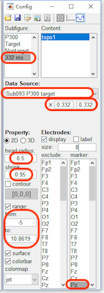

In this chapter, we will show the process for the generation of the following figure. In this figure, we show the ERP of P300 on channel Pz with its topography on 332 ms. The corresponding time-frequency maps in the conditions of target and nontarget are illustrated in the bottom panel.
Step1. Open the Figure Module
In the folder of rawdata1, selected the datasets
- Sub093 P300 nontarget
- Sub093 P300 target
- bl avg cwt bl reref ep_S 9 sp_filter ica chan_interp butt sel_chan sub093
- bl avg cwt bl reref ep_S 10 sp_filter ica chan_interp butt sel_chan sub093
Click “Figure->General Figure creator” to open the figure module with a blank canvas.
Step2. Create the Subfigures
2.1 Add a curve, two images and one topography into the canvas.
2.2 For the second image and the topography, enable the colorbar.
- Click the content button in the toolbar, select image3 in the Subfigure and enable the colorbar.
- Select topograph4 in the Subfigure and enable the colorbar.
2.3 Adjust the position for each subfigure
- Click the figure button in the toolbar, select Curve1. Set the Title to “P300”, Font size as 12, and the position as x=50, y=340, w=600 and h=250.
- Select Image2. Set the Title to “Target”, Font size as 12, and the position as x=70, y=50, w=250 and h=250.
- Select Image3. Set the Title to “Nontarget”, Font size as 12, and the position as x=360, y=50, w=250 and h=250.
- Select Topograph4. Set the Title to “332 ms”, Font size as 12, and the position as x=480, y=470, w=120 and h=120.
After step 2, the figure will be like the following figure,
Step3. Add the Content
- Click the content button in the toolbar, select P300 in the Subfigure. Add a curve with the data source as “Sub093 P300 target” and channel as Pz.
- Add a curve with the color as blue [0,0.45,0.74], data source as “Sub093 P300 nontarget” and channel as Pz.
- Add a line with the position as x1=0.332, y1=-5, x2=0.332 and y2=10.8619.
- Select Target in the Subfigure. Set the data source as “bl avg cwt bl reref ep_S 9 sp_filter ica chan_interp butt sel_chan sub093”, channel as Pz, range from -9 to 9, enable the contour, and set the width as 0.5, start from 0 to 0.
- Select Nonarget in the Subfigure. Set the data source as “bl avg cwt bl reref ep_S 10 sp_filter ica chan_interp butt sel_chan sub093”, channel as Pz, range from -9 to 9, enable the contour, and set the width as 0.5, start from 0 to 0.
- Select 332 ms in the Subfigure. Set the data source as “Sub093 P300 target”, x from 0.332 to 0.332, head radius as 0.5, shrink as 0.95, range from -5 to 10.8619 to keep it the same as the range of P300 curve. For the electrodes, set the szie as 8 and marker the channel Pz.

After step 3, the figure will be like the following figure,
Step4. Set the axis parameters
- Click the axis button in the toolbar, select P300 in the Subfigure. and enable the Legend. Select curve1 in the listbox of the content, change its name to Target in the legend. Select curve2 in the listbox of the content, change its name to NonTarget in the legend. For x axis, set the x-lim from -0.5 to 1.5 second, change the location to origin, which is only support by the higher version Matlab. Enable the label, and set it as “Time [sec]”. For y axis, change the location to origin, which is only support by the higher version Matlab. Enable the label, and set it as “Amp [\muV]”
- select Target in the Subfigure. For x axis, set the x-lim from -0.5 to 1.5 second and set the label as “Time [sec]”. For y axis, set the label as “Freq [Hz]”.
- select Nontarget in the Subfigure. For x axis, set the x-lim from -0.5 to 1.5 second and set the label as “Time [sec]”. For y axis, set the label as “\muV^2/Hz”, which acturally is used for the lable of the colorbar in the following edit.
After step 4, the figure will be like the following figure,

Step5. Export the Figure
Until now, we have finished the edit of the figure in Letswave. In the following, we need to export the figure, for a further edit in the other software. Click the button “export the figure” in the toolbox, save the figure as vector files, like eps or pdf format. Here, we use Illustrator to add a box outside the figure and adjust the position for the text.
Finally, we can get the Figure “Fig_1.jpg” as is shown above.